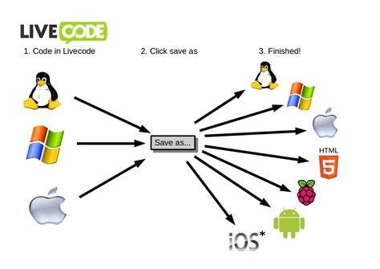

WEB TECHNOLOGY
Application
- Application is a set of programs.
- Program is a set of instructions,which are given to a machine.
- Programmers can write instructions by using following type of language.
- Programming language
- Query language
- Markup language
- Scripting language
- To run application in a machine make use of operating systems like Windows,Unix,Linux,Mac,Android,ios
Types of application
- We have 4 types of applications
- Standalone application
- Web application
- Mobile application
- Distributed application
Standalone application
- Standalone applications are independent applications that is the application which is not depend on another application
- The applications which is not depend on another application
- The applications which does not require internet connections is reffect as"standalone-application".
- To develop these type of applications make use of"core java".
- To run this applications,user needs to install operating system like,laptop & desktop.
- For example notepad,editplus,calculator,microsoft office.

Web application
- The application which require internet connectivity as well as browser is referred is web application.
- This applications are dependent applications.
- Thus applications does not require installation in a client & machine.
- To develop web applications,programmers are using 'web technology" & "advance java".
- Example:Facebook,Netflix,Amazon,Hotstar,Udemy.
Browser
- Browser is a standalone application requires interest to access web applications to the another.
- Each type of browser must & should get install in a client machine.
- Google,Chrome,fire fox,brave,microsoft edge,Operamini.
Server
- Server is a amachine which acts like mediator between programmer & user.
- Programmer are using server to store web applications.
- User can access web applications by sending the request to the server with the help of internet & server will provide response to the user.
- server size or dimension depends on no.of uses data.
NOTE:server and client machine both are present at different locations,hence web application required internet.
Types of web application components
- Every web application have two important components
- The components which are visible to the user is referred as'front end"components.
- to develop these type of components make use of "Web technologies"[Html,css,javascript].
- For ex:login webpage,images,advertisement videos etc...
- The videos components which are hidden from the user are reffered as backend components
- to develop packet of the application programmers are using "core java&sql".
- For example:Database,otp generation process etc..
Types of web application
- we have two types of web application
- Static web application
- Dynamic web application
- The application which is having only front end components is referred as static web application.
- To develop these type of applications,programmers are using"web technologies"[Html,css,javascript].
- for example:blog,wikipedia.
- The application which is having frontend aswellas backend components is reffered as"Dynamic web application".
- To develop these type of applications make use of "Advanced java"[web technology+sql+core java].
- For example:amazon, flipkart.
Mobile application
- The application which needs to download & install in mobile is reffered as mobile applications.
- To develop mobile application make use of flutter technology
- For example:whatsapp,facebook,instagram.
Distributed application
- The applications which are interconnected is reffered as distributed applications to develop these type of applications make use of "cloud technology".
- Example:Amazon,instagram,facebook.